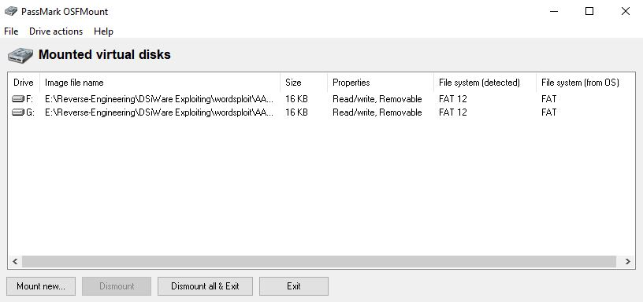
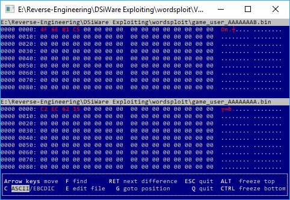
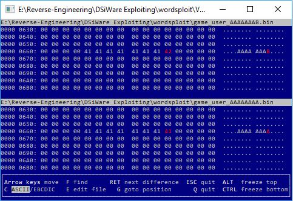
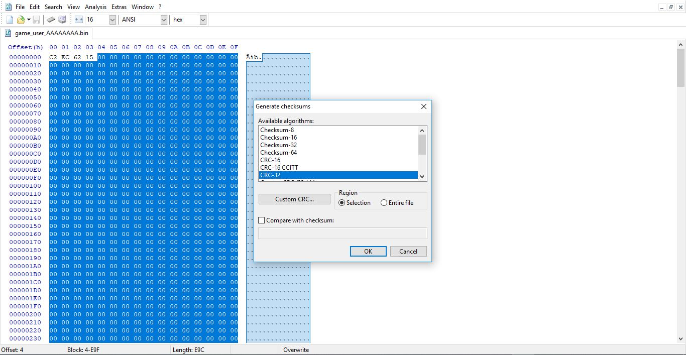
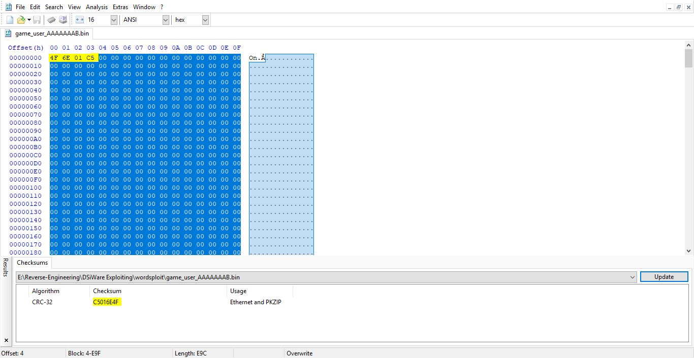
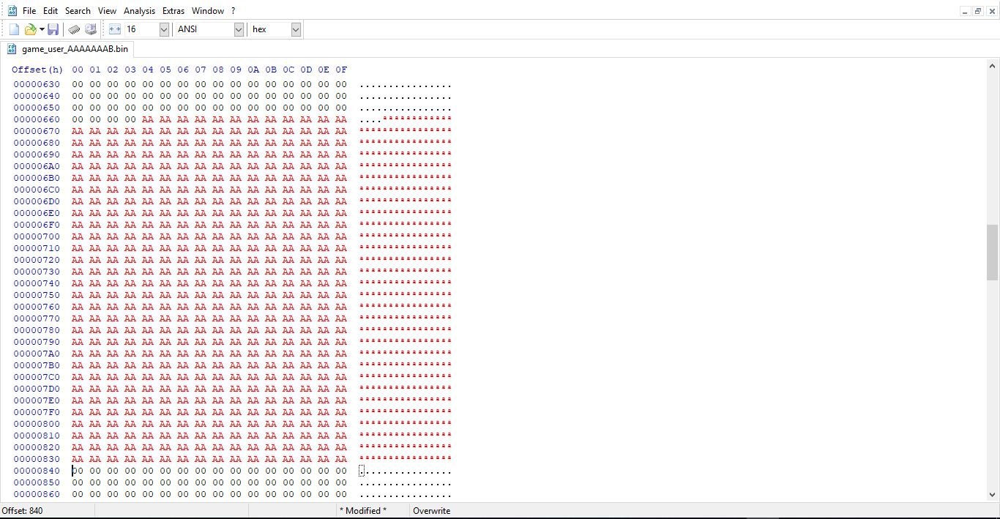
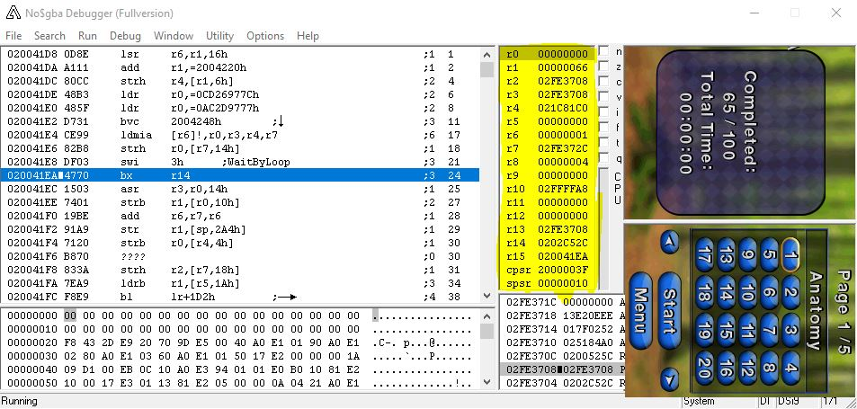
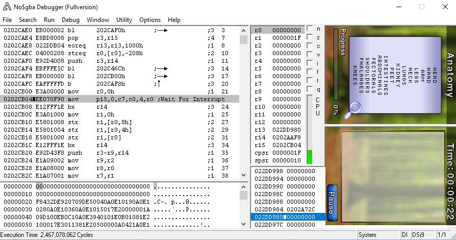
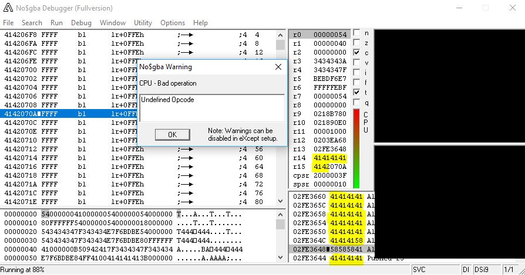

Introduction:
I noticed that there were some questions about how some reverse-engineers or hackers found exploitable vulns in DSiWare applications. I also noticed that there weren't any write-ups or documentation that involved discovering DSiWare application flaws.
But today, I wanted to be able to explain how you could be able to find vulnerabilities in DSiWare applications (If there are any to pop). It'll save people time to have no need to ask if a game is vulnerable or not. Plus, I think this could be a good introduction to learn how to get into exploiting applications or games. Without no further interruptions or side-bar conversations, let's get started :D
Things to know:
To get things out of the way, you need know some things before you get started.
- A crash doesn't mean that it's automatically exploitable. Of course, the crash might be exploitable, but if it doesn't overwritten parts of the stack registers, it's not likely to be exploitable, but that will be covered later on in the article.
- I'll only be covering stack smashing flaws since it's the easiest to start-off with and I'm familiar with these type of vulnerablities to explain what they are. I suggest that you look up how stack smashing works. There's an overview on this topic onCTurt's DS-exploit-finding guide works (Or I can google it for you Here)
- You must know that the DSi uses a ARM Processor. R0-R12 are generally based use for calculation as the last 3, R13(SP = Stack Pointer), R14(LR = Link Register), and R15(PC = Program Counter) are unique. You can find more details on these registers here!
Tools I used:
Now let's move on! You'll need the right equipment/tools to be able to get throught this article. Here's the tools I used for the purpose of this article.
- NO$GBA - It's a really useful debugging emulator which can emulate your DSi NAND.
- TWLTool - You'll definitely need this to be able to decrypt/encrypt your DSi NAND. That way, you can edit the NAND with the save you're injecting for NO$GBA.
- HiyaCFW(Optional) - This makes it easy to actually pull your savedata as the SD is your NAND. (This is optional though)
- FWTOOL - This will be useful for dumping your NAND so you can use it for NO$GBA to debug/emulate your DSi. (You'll need homebrew access)
- HxD - I use this hex editor a lot and it has useful analysis features that we'll use in this guide.
- VBinDiff - I use this to mostly compare files next to each other. This will help find the differences in a DSiWare savefile for checksums, different names or other garbage tbh :/
- OSFMount - This tool will be useful for mounting the public.sav file to reveal basically the real save. Although the save is in the public.sav but it's useful to just mount the file and take what's in it to observe and then put it back.
- Money - You'll need it to buy these games you don't have.
Picking a target:
For the sake of this article looking for stack smashing vulnerabilities in DSiWare applications, I would start with games that have mostly profile names or some type of username-input. It doesn't have to be strictly profile names but there are some applications that input high-score names like Fieldrunners. Even if the string character is 3 bytes long, you can still try.
So, I'm going to use a simple game called "WordSearcher" that I already looked at and it's not vulnerable, but it's a really good example. So remember what to look for:
- Look at list of Examined DSiWare Applications before you start. Don't waste your time if you're looking into finding new flaws.
- Profile names that allow you to create a custom name
- Games with highscores that allow a custom name as well could be useful
- Avoid some games with multiple elements (some RPGs) unless you like the challenge for checksums
Getting past Checksums:
Checksums/Sums really plays a huge role for certain games or applications. For those of you who do not know what checksums are, allow me to break it down for you.
The word "Check" should ring a bell. The word "Sum" is like a number or a byte. maybe adding if you're a mathematician. So if you really put those 2 meanings together, you can tell they're checking something. But for what purpose? It's to ensure a file or a section in a file is not corrupted or tampered with. Without these, programs/applications would be extremly vulnerable to simple attacks or the application could act crazy depending how bad it's scripted.
Thus, editing a savefile without actually patching or going through the right corrections. So that's what we have to get through before we start digging or editing whatever we please. Let's create some saves and compare those files so we can pin-point or see if this WordSearcher game has a checksum(s). Luckily, it's common for a DSiWare appplication to use a familiar CRC polynomial so you have a chance to patch checksums easily with HxD or other sum calculators.
So I created 2 brand new profiles. 1 contains a my username to be AAAAAAAA, and the other contains AAAAAAAA. So two different public.sav files to use VBinDiff to compare. I simple just renamed those to their apppropriate names. But before that, we first have to get the real save that's mounted in the public.sav. So we'll use OSFMount to do this.
Before you start, you must have your DSi NAND that you dumped. There are tutorials out there to be able to dump your nand. You'll also need your DSi(s) CID. The newest FWTOOL 2.0.0 homebrew application should help with that. You'll also need your ConsoleID as well.
Assuming you did this already and that you know how to do this let's move onto mounting our save files we made.
- Open up "OSFMount"
- Select "Mount New..."
- Click the "..." button to the right of "Image file".
- Find the public.sav you renamed (AAAAAAAA.sav for this guide)
- Un-check "Read-Only drive" and check "Mount as removeable media"
- Click "Ok" and you should be ready to go. 
- So you have your selected area so you need to navigate to "Analysis"
- From there, select the "Checksums..." option.
- Be sure to choose the appropriate algorithm. In that case for this game, it uses CRC32/Checksum-32 so I select CRC first and pressed 'OK'
- NoCash - For creating no$gba and for the excellent documentation
- WinterMute - For creating the tools FWTOOL and TWLTool
- Weml0 - For teaching me the 'WemI0Sum' method
- CTurt - Inspiration of his DS-exploit-finding guide
- Jerbear64 & emiyl - For the DSiCFW guide
You can click one of the drive medias and you should be greeted with a real savefile without the DSiWare headers or any of the things we're not focusing on. Repeat the samething and you should be greeted with another. Let's now move on to comparing the two files wit VBinDiff

You should always have a different file name for these files so that you're a bit organized with everything. So selecting those two files and dragging it in the program gave us this.  
As you noticed from these two screenshot, we seemed to have found the differences in these saves by pressing Enter or manually scrolling. At offset 0x0 for both files, it seems we might be dealing with CRC32 considering that it's 4 bytes long. CRC8/Sum would be 1 byte long and CRC16/Checksum-16 would be 2 bytes. So since we now know where the checksum is, we're going to start investigating what happens if we change it or why those byets came to that outcome. Let's begin to open our save in HxD
So going back to where I mentioned that HxD has really useful features like analysis, this is where we're going to atempt to use HxD's tools to figure out if the checksum is using a classical-polynomial algorithm or it's using a custom custom algorithm. I'll only cover classical polynomial since custom checksum algorithms requires dumping the games code and using any disassembler to reverse engineer the code to find that CRC function. I don't know how to do that but we'll be doing something else that I'm calling this the Weml0Sum as he was the first to atually teach me this cool trick. It's really use.
What is the 'WemI0Sum' method? It's a method to easily have a chance to patch checksums and or a way to determine in a game uses a classical-polynomial algorithm or not. This method consists on highlighting blocks/chunks of a the save and use a CRC analyzer with he appropriate sum calculation of course. It's more time consuming and it's a bit because if you don't have much reverse-engineering experience, the WemI0Sum is a go. So let's try it with these saves we have.
Since we're now open in HxD, I selected basically after the first for byte, which is our checksum, all the way to the end of the file. It's highly simple and with this method, it may take an hour or all day to find the perfect area where the checksum will change or be affected. But take a look at the screenshot how things should look like if you followed along. 
Now this is where the 'WemI0Sum' will determine if this game is using a classical-polynomial or not.
Notice how the bytes "C2 EC 62 15" in the save is reverse by "15 62 EC C2". So let's take this to the test and look at the other file to make sure our reading is accurate.  Once again, the bytes seem to be identical but in little-endian. We can confirm from here that the game does indeedly use a familiar CRC32 polynomial algorithm. Now from there, you can basically use an open source CRC patcher, edit the offsets a bit and use it as a CRCFixer for your game. We finally cracked the checksum of this game and we can now move on to the next section. Also, not all games will be easy with this method as I explained earlier. You'll have to disassemble the game's code and reverse-engineer the checksum function itself if the Weml0Sum doesn't work.
Attempting an overflow:
If you maade it this far, congratulations, you're finally ready to go ahead of edit the game's savefile and look for potential overflows. WordSearcher's profile name ascends to 8-bytes long. Let's try to see what would happen if we used an extensive string. I like using extensive "AAs" since it's easier for me to look at the registers if any are verwritten with those strings.

I think what we have should be enough to do some damage to the application. Once you're done adding a long string or editing the save, do the 'Welm0Sum' method to correct the checksums so it doesn't come up as corrupt when you open it.
Rename the savefile back to its original name (game_user.bin) and you can basically copy and paste the file back into the public.sav while OSFMount was open. Once things are done, you're free to "Dismount all & Exit" the program. (Click OK if there's a warning).
You'll need to decrypt your NAND and inject the save to it's original spot and re-encrypt the NAND to test it in NO$GBA. You can find the tutorial for that here under the "Decrypting your NAND" spoiler.
Once our NAND is back to being encrypted, we can now try to emulate our NAND in NO$GBA. I won't go over how to set up the NAND to use for NO$GBA since there are tutorials elsewhere to look into.
Open up NO$GBA and select any game from the dirrectoy you have your roms placed. You should on the DSi Menu, now we can test to see if we get a crash from our attempted overflow.
ON REAL HARDWARE, this part of the game would freeze and crash the DSi, let's see if this would happen on NO$GBA to test our overflow attempt.  If you already paid attention from what I said earlier in the guide about this game, you know it's not being vulnerable. NO$GBA doesn't seem to have any error pop-ups or any registers in the highlighted regions to be overwritten. So from there, you could try other methods.
So if the profile string isn't vulnerable we can still improvise, we can try the crossword levels itself maybe. The crossword levels in this game is plaintext, which is a big no-no. Anyway, let's try it. We first have to make crossword data.
 Instead of AA(s), I changed things up to be BB(s). We used an exetensive large string for one of the crossword levels. The crosswords levels applies to the regular profile name checksum so the Welm0Sum would work. Now we just have to test it.
Instead of AA(s), I changed things up to be BB(s). We used an exetensive large string for one of the crossword levels. The crosswords levels applies to the regular profile name checksum so the Welm0Sum would work. Now we just have to test it.
We test it in NO$GBA again there seems to be no errors but custom/non-existant strings n the crossword board. No overflows and this type of bug is not exploitable.  So now let me show you what NO$GBA would look like if you got a useful crash for Fieldrunners. You can tell if the game crashed if NO$GBA error popped up and if you look at the highlighted area, some of the registers are overwritten with AA(s). If R15(The PC) is overwritten as well, you have yourself an exploitable application. 
Closing:
So I hope this article/writeup gave you an overview on how to find vulnerabilities in DSiWare applications. Hopefully I can update this article to include more things to cover like reverse-engineering the checksums and maybe other things. If you ever have any questions, you can let me know on my Discord Server and I'll try my best to answer all of your questions.
Hopefully I can probably get a writeup about porting NDS-HBMenu for exploitable games. Anyways, I'm suprised you made it this far considering how long this article is. I hope you learned something today at least.